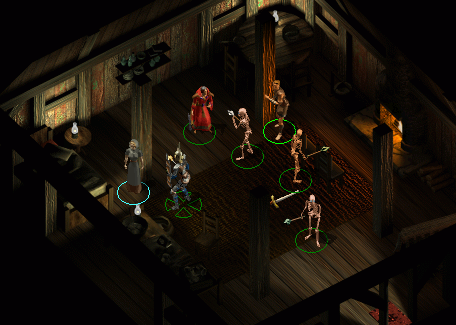
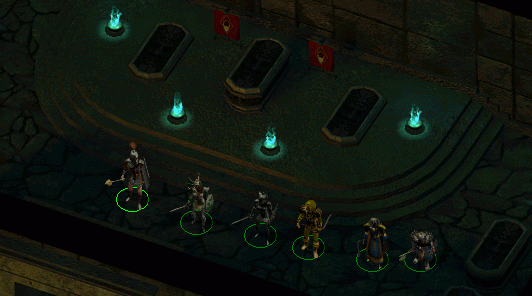
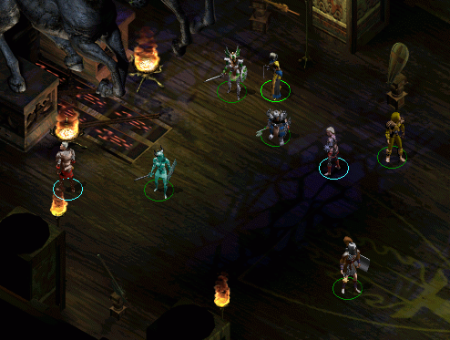
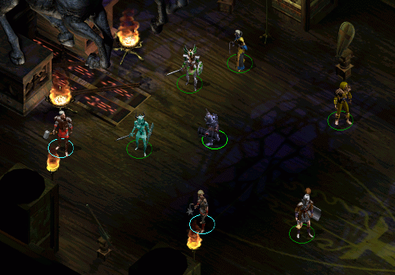

Introduction
This mod allows you to do any combination of three things:
—» Fix character attack animation sounds in TotLM
—» Restore combat stance animations in Icewind Dale
—» Use IWD/BG1 (legacy) character animations in HoW/TotLM
Visit the website or forum for all the latest updates.
BACK TO TOPMod Requirements & Details
The current version of the mod supports properly patched installs of Icewind Dale TotLM (v1.4.2).
BACK TO TOP#1 :: fix character attack animation sounds
Icewind Dale had a great, atmospheric selection of weapon-specific attack sounds. You may have noticed that due to a bug, after installing TotLM (patch 1.4.2) these disappeared and were replaced by a generic whooshy sound. This is caused by a bug in engine code, and what it plays is in fact a wyvern attack sound.
This component fixes the issue, restoring proper weapon based attack sounds.
Unpatched TotLM will sound like this:
When these are the sounds that should play (and will again, after installing):
#2 :: enable combat stance animations
By default, the Icewind Dale engine does not render combat stance animations (defaulting to the idle animations). This can sometimes look a little choppy, as the actual attack animations are made to fit the combat sequences. If you want your animations to render the way they do in Baldur's Gate, this component is for you.

Optionally, you can install fixes for some of Icewind Dale's scripting issues, leading to characters being perpetually busy (which could actually be either a cause or an effect of the animations being disabled as it's a lot more evident if enabled). It should also help potential stutter as scripts will no longer fire constantly.
However, as this does replace the affected character scripts it is advisable to install this part before other mods patching any .bcs scripts.
#3 :: use BG1/IWD character animations
Icewind Dale originally used Baldur's Gate I animations, with items/etc. made to match this content. When updating the game engine with the BGII equivalent, the Heart of Winter patch replaced the character animations with those seen in SoA. If you prefer to play HoW/TotLM with the original animations left intact, you can now do so.



This is similar to the legacy content of Infinity Animations, except that it restores the character animations (rather than adding them as extras). This is a viable replacement with Icewind Dale as it does not make use of any of Baldur's Gate II's new features (dual wielding, etc.)
Credits
For support or questions, please visit the mod forum.
"Bringing you 1998 since 2004."
Coded and distributed by the power of:
BACK TO TOP